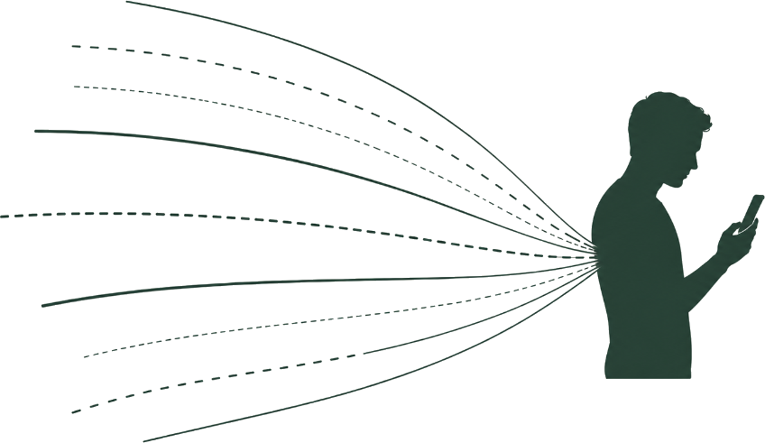
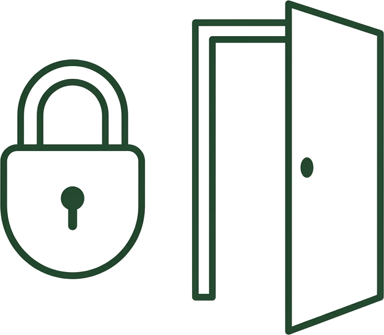
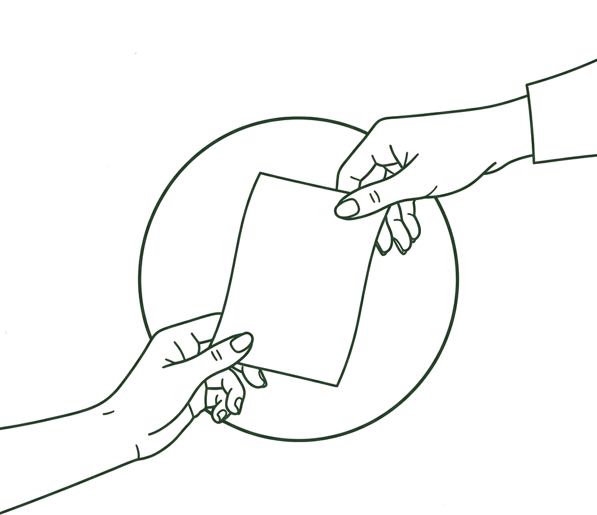
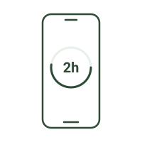

Our Ethos
Not another app blocker. A phone pact with people you trust.

Heavy phone use is associated with disrupted sleep, reduced presence, and lower well-being, although effects vary by person, activity, and context.
The playing field is uneven. The algorithm does not get tired. You do. At the end of a long day, one person is face-to-face with systems built to keep attention for as long as possible.
The enemy is not your phone, a chemical buzzword, or personal weakness. The enemy is being asked to fight the algorithm alone.
PhonePact offers one response: a pact, not a punishment. You still choose. You just do not have to choose alone.

When we attempt to reduce screen time, we must ask: Who has the autonomy? Who is choosing to put the phone down?
Screen regulation often begins with parents confiscating devices as punishment. This is not a way to help a young person practice their own self-regulation when external control is absent.
Many people know the loop: install a blocker, follow it for three days, bypass it when tired, and wonder why another tool did not fix the problem. A blocker can be useful, but it still leaves one person alone with the choice when the restriction is removed or dismissed.
PhonePact does not treat bypassing a blocker as weakness. It asks what might change if that difficult moment included trusted people rather than another wall.
The goal is not to hate your phone. The goal is to come back to your life.

The idea for PhonePact emerged from a simple, personal agreement. A friend of mine wanted to change an online habit that was draining their productivity and presence. I shared a similar struggle. Instead of installing another blocker, we made a pact: we remained free to choose, but when the agreed moment arrived, we would tell each other.
There was no force and no punishment. The choice remained ours, but it no longer happened alone.
"In the deep moments of urge, the idea of another human being seeing my choice brought me back to healthy decision-making I felt good about."
The habit changed, and for the first time the change felt supported rather than forced. A few days later, another friend heard about our pact and joined. Then another.
That experience became the central insight behind PhonePact: a difficult choice can feel different when people you trust are beside you.
This pact draws from a well-established sociological concept: The Looking-Glass Self. Our awareness of how trusted people may see us can act as a mirror. PhonePact uses that social presence as an invitation to reflect, never as a score or threat.
This is why people work far more productively in libraries or cafes than alone in their bedrooms. The physical presence of others calls your social self into existence, keeping you conscious of your actions.
As children, when we were watching TV or playing video games, the sound of the garage door opening and our parents returning instantly brought our external-in perspective back. We scrambled to clean up or to thaw the chicken we'd forgotten about, jolted back into reality.
During deep scrolling, that wider perspective can disappear. PhonePact acts as a quiet reminder that your life and your trusted circles still exist outside the feed.

The onboarding is a guided introduction rather than a single setup screen. It explains PhonePact’s autonomy-first approach, asks about the person’s current life context and what they hope to change, requests Screen Time and notification permissions with plain-language privacy explanations, sets a private notice cadence, and helps the person choose their first pact point.
PhonePact reads the overall screen time on the enrolled iPhone—the same daily total you would see in Settings. Apple requires that the check-in points be attached to activity you enroll through its own picker, so setup asks you to select everything; that one step is what lets the pact watch the whole device rather than a shortlist. Your selection never leaves the iPhone, and your circle never sees what you used. The interface only states time already accumulated—such as "1 hour 50 minutes today"—and never presents a countdown or time remaining.
During setup you choose how often a private, text-only notice finds you — every 10, 15, 20, or 30 minutes of accumulated screen activity: "45 minutes of screen time today." You can change that cadence later, or turn the notices off entirely, from inside the app. These notices stay on the device and are never sent to a circle.
For a two-hour pact point, PhonePact asks privately at 1 hour 50 minutes. The ten-minute grace is measured in additional screen activity, not wall-clock time, so putting the phone down pauses the sequence.
If screen activity reaches 2 hours, a simple message is sent to every circle the person belongs to: "Hank reached 2 hours of screen time today." It shares again at 2 hours 30 minutes, and continues that upward rhythm every additional 30 minutes—up to six further check-ins in a day. A private prompt arrives ten usage minutes before each shared check-in — before your pact point, and before every milestone past it.
There is no final state and no score. Each shared check-in is simply another moment to notice and choose.
Any change to the pact point—higher or lower—must specify how long it lasts: today only, a chosen number of days, or permanently. The proposal cannot be sent without that duration. It then goes to one chosen partner for approval, and the current pact stays active until they approve. Pausing and private notification preferences remain user-controlled.
Your pact point belongs to you and stays the same across the app. You can belong to as many as three circles, and every circle automatically receives the same duration-only shared check-ins. There is no per-circle routing switch. You can choose the approval partner for a proposed pact change from any circle.
Every circle has a plain-text room for encouragement and conversation. Messages disappear from the room after 24 hours. Members can delete their own messages, report harmful content, block abusive members, and contact PhonePact support.
We intend to explore letting people exclude specific apps from their overall screen-time total. Apple provides positive activity-selection filters rather than a simple "everything except these apps" control, so PhonePact will not promise exclusions until a technical prototype proves the behavior.
Our sole goal is to get as many people free from their screen addictions as possible. It isn't to price gouge you or turn a huge profit from your pain. The subscription price of the app is the lowest possible, and it becomes a way to solidify intention while also keeping our operations afloat.
PhonePact is free to download. Your account's full 30-day trial begins only when you activate your first pact with monitoring and at least one circle. No credit card is required to begin.
After day 30, one account subscription — $0.99/month, or $9.99 for the year — keeps all of your circles, rooms, approvals, and shared check-ins active. Without a subscription, your private on-device screen-time view and account controls remain available. Because we charge this small recurring commitment, we make the following promises: